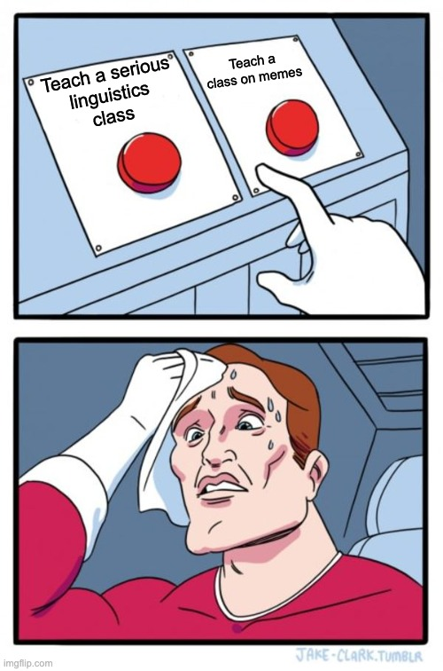
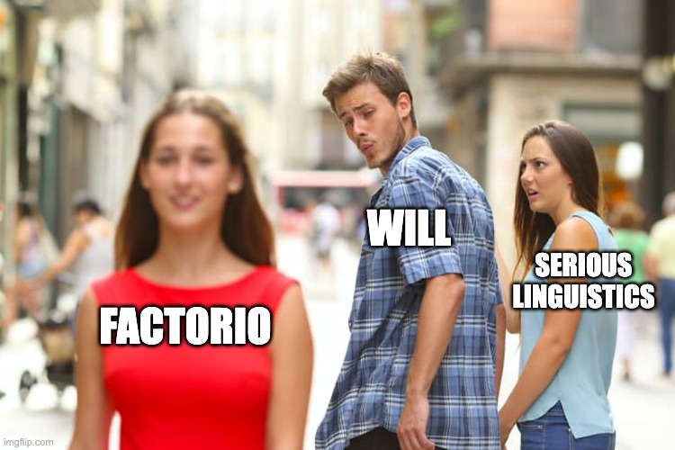
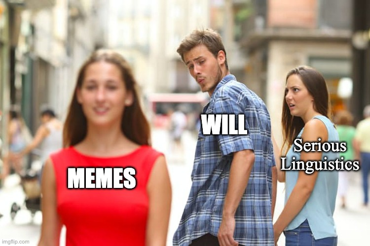
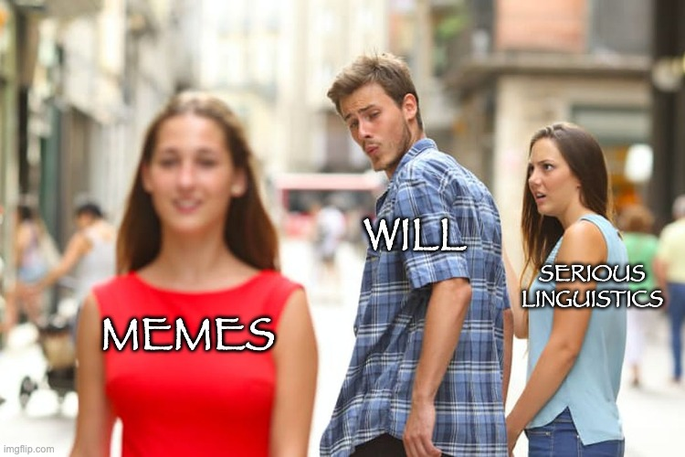
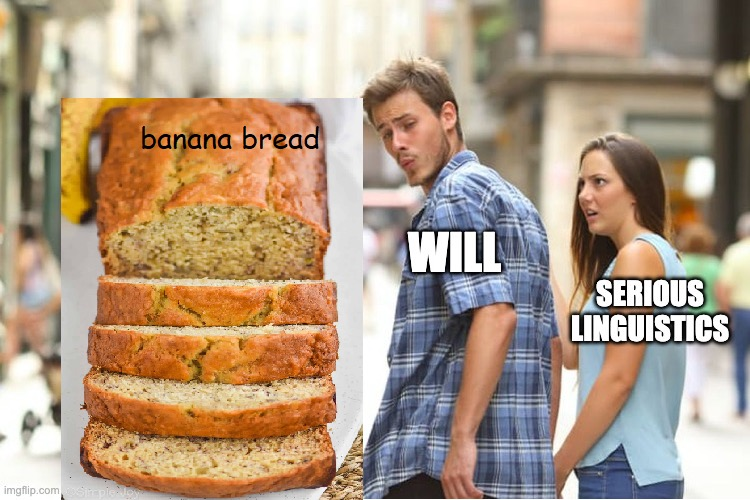

# Morphology ### LIGN 42 - Will Styler --- ### Today's Plan - What is morphology? - How can we identify the components of a word? - What kinds of morphology exist? - How does this apply to memes? --- ### Morphology is a major subfield of Linguistics - ... and is probably the one most applicable to meme analysis --- ### Morphologists ask lots of questions - What is a word? - ... and is this the same everywhere on Earth? - What components make up words? - What are the best strategies for finding the relationship between a word’s form and its meaning? - How are new words formed? - ... and how do we figure out their meanings? - How are words stored in the mind? --- ### Let's start with a simple question - How many parts does the word 'recreated' have? - How do we know? --- ### We find out about word subparts through finding form/meaning relationships - Let's explore that idea --- ### Word Set 1 cat, feline, lion, leopard, kitty, pspspspspsps, paw, neko - **These are related only in meaning** - They don't tell us anything about the composition of words --- ### Word Set 2 cat, scatter, catastrophic, scathing, uncategorizable, catcher, catholic - **These are related only in form** - They don't tell us anything about the composition of words --- ### Word Set 3 cat, kittycat, catty, catlike, cathouse, cat-and-mouse game, cattery, catio, catnap - **These are related both in form, and in meaning!** - All contain the form 'cat', and all involve 😺 --- ### When form is related, *and* meaning is related, then we've found a chunk! - 'cat' is a *meaningful chunk* of a word - We use the term 'morpheme' to mean the smallest meaningful chunk which can be or be part of a word - Some words have one morpheme ('cat'), and some have many ('unrecognizable') --- ### Word Set 4 start, stop, restart, past, lapsed, static, steady, still - **These have similar meanings, and all have /st/** - Is this a morpheme? - Why not? --- ## Identifying Morphemes --- ### How can we tell 'Will' from his clothing and accessories? - Why do you say I'm wearing gray pants, rather than them being a part of me? - Is my watch a part of Will? - How can you tell his wedding ring isn't just Will? - How can you tell his torso **is** an inherent part of Will? --- ### How can we tell the morphemes in 'unrestartable'? --- ### We need evidence that a piece can be re-used elsewhere for it to be a morpheme! - You can use the plural -s or -ly or cat in a bunch of different words, including ones you've never heard before - **Make up a new word using 'cat'** - You can't use 'st' in a new context and preserve the 'temporal boundary' meaning - **Go ahead, make my day** --- ### What are the steps to this analysis? - Group the data by shared elements of meaning - Within those groups, look for recurring patterns of form - Build hypotheses, then use them to make guesses about other bits of the data - "This also has the morpheme. Does it also mean X?" - Try to break your analysis with other forms from the language - "What words, if any, *don't* follow this pattern?" --- <table><thead><tr><th>Finnish</th><th>English Gloss</th><th>Finnish</th><th>English Gloss</th></tr></thead><tbody><tr><td>laulan</td><td>'I sing'</td><td>yuon</td><td>'I drink'</td></tr><tr><td>laulat</td><td>'You sing'</td><td>yuot</td><td>'You drink'</td></tr><tr><td>laulavi</td><td>'He sings'</td><td>yuovi</td><td>'He drinks'</td></tr><tr><td>laulamme</td><td>'We sing'</td><td>yuomme</td><td>'We drink'</td></tr><tr><td>laulatte</td><td>'You all sing'</td><td>yuotte</td><td>'You all drink'</td></tr><tr><td>laulavat</td><td>'They sing'</td><td>yuovat</td><td>'They drink'</td></tr></tbody></table> --- <!-- ### A few pitfalls - Don't assume that every English word/morpheme will be reflected in the other language (or vice versa) - English 'I will go' vs. Spanish 'Iré' - Don't assume that everything which your language marks with a form will be marked in the other language - Russian marks gender of the subject on the past tense verb, English doesn't - Don't assume that there will always be easily identifiable chunks of form for each meaning - Which part of the word 'bachelor' carries the meaning 'single'? --> ### Meaning changes often come from adding new chunks of form - This is called **'concatenative morphology'** - You're adding onto what already exists - Things which get 'stuck on' to base words are called 'affixes' - Prefixes and Suffixes are both common in English - cat, kittycat, catty, catlike, cathouse, cat-and-mouse game, cattery, catio, catnap --- ### Not all morphology adds more chunks of form - Sometimes, *changes to what's already there* mark the difference - Remember the changing tones changing meaning in OtomÃ? - Also think about 'run' vs. 'ran', 'sing' vs. 'sung' - 'record a song' and 'make a record' - This is referred to as [**non-concatenative morphology**](https://en.wikipedia.org/wiki/Nonconcatenative_morphology) --- ### Morphology helps us understand the components of words - ... and how we can figure out the meaning of a new word we've not heard before --- ### OK Will, we get it, morphology is a thing - ## Why do we care in LIGN 42? --- ### This works for memes too! - If you can change just one component of a meme and modify the meaning, you know something about the meaning of the components - Memes have morphemes! - Morphmemes? --- ### For each example, let's ask: - What changed about the form? - Was it concatenative or non-concatenative? - What changed about the meaning? ---  --- <img class="r-stretch" src="memes/minimalpairs/triplet_2.jpg"> --- <img class="r-stretch" src="memes/minimalpairs/triplet_3.jpg"> --- <img class="r-stretch" src="memes/minimalpairs/triplet_12.jpg"> ---  --- <img class="r-stretch" src="memes/minimalpairs/triplet_4.jpg"> ---  --- <img class="r-stretch" src="memes/minimalpairs/triplet_8.jpg"> ---  ---  (Thanks, Yuri) --- ### ... and by the way <img class="r-stretch" src="memes/minimalpairs/triplet_10.jpg"> --- ### Think of other elements of style - What does a given audio add to a TikTok? - Why does cat color matter in a cat meme? - Why add a particular song to a video? --- ### Morphology works for memes! - ... and you'll spend the weekend feeling out just how that works --- <huge>Thank you!</huge> --- # Important Terms --- **Morphology**: The study of words, word formation, and word storage, among other elements of linguistics --- **Morpheme**: The smallest contrastive unit of meaning in a language, or, put differently, the smallest analyzable and usable unit of form and meaning. --- **Concatenative Morphology**: Adding or changing meaning by adding or removing additional chunks of linguistic forms (e.g. prefixes, suffixes) - 'throw' -> 'thrown' or 'throwing' --- **Non-Concatenative Morphology**: Adding or changing meaning by modifying the existing form of the word - 'yeet' -> 'yote', 'ring' -> 'rang', 'record a record' --- ### Extra Note! - Sets of words like 'glimmer', 'glitter', 'gleam', 'glamorous', 'glowing', 'glance' which share form and meaning, but no morphemes are often called [phonaesthemes](https://en.wikipedia.org/wiki/Phonestheme) - This is awesome!